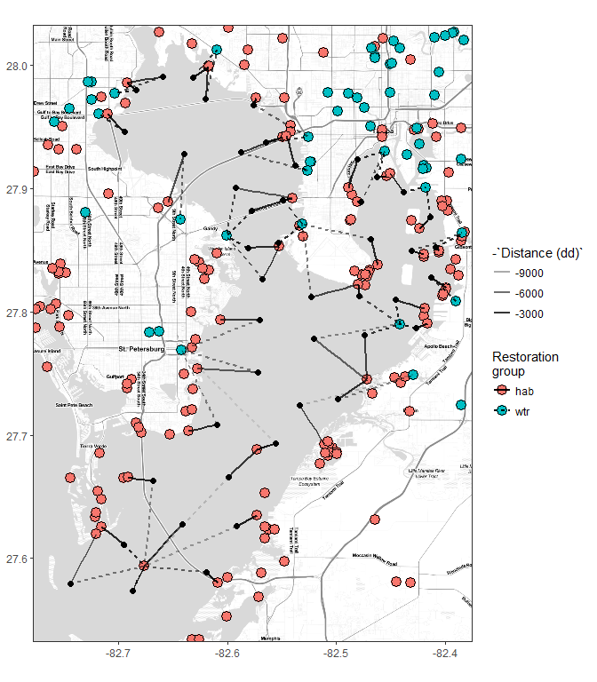
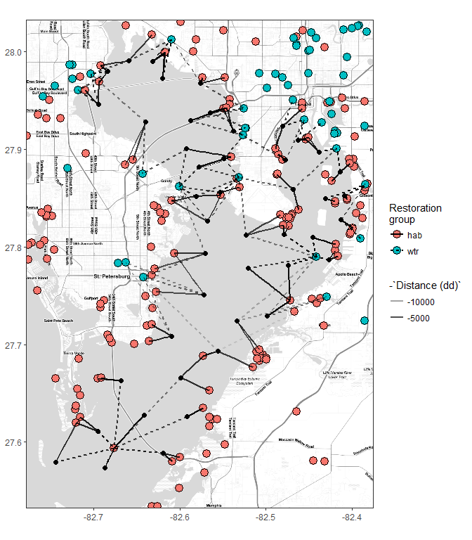
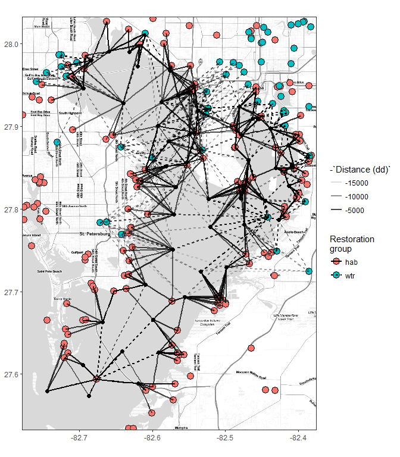
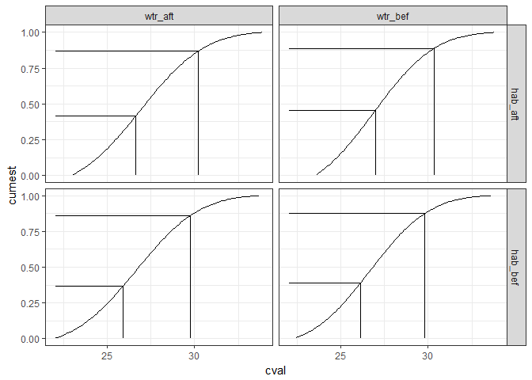
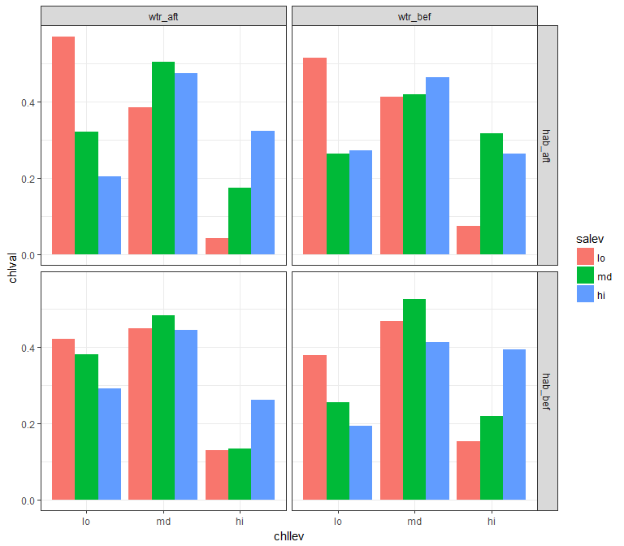
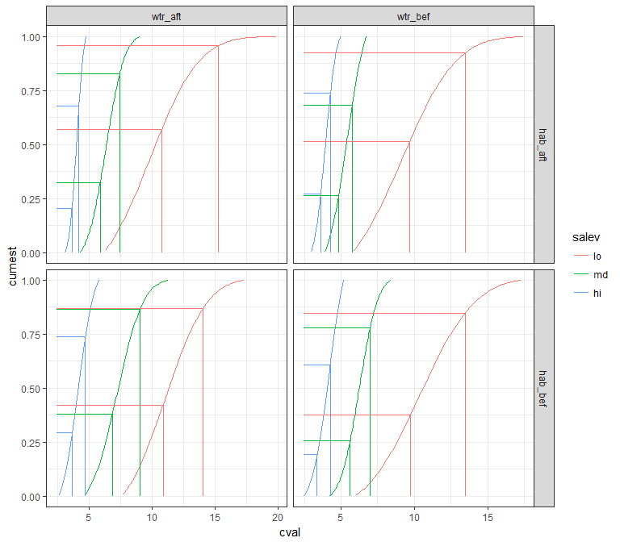

Observed restoration projects
Summary plots
ext <- make_bbox(reststat$lon, reststat$lat, f = 0.1)
map <- get_stamenmap(ext, zoom = 10, maptype = "toner-lite")
# restoration project grouping column
resgrp <- 'top'
restall <- left_join(restdat, reststat, by = 'id')
names(restall)[names(restall) %in% resgrp] <- 'Restoration\ngroup'
# base map
pbase <- ggmap(map) +
theme_bw() +
theme(
axis.title.x = element_blank(),
axis.title.y = element_blank()
)
# map by restoration type
pbase +
geom_point(data = restall, aes(x = lon, y = lat, fill = `Restoration\ngroup`), size = 4, pch = 21)
# map by restoration year
pbase +
geom_point(data = restall, aes(x = lon, y = lat, fill = factor(date)), size = 4, pch = 21)
# barplot of counts by year
toplo <- restall %>%
group_by(date)
ggplot(restall, aes(x = factor(date))) +
geom_bar() +
coord_flip() +
theme_bw() +
theme(
axis.title.y = element_blank()
) +
scale_y_discrete(expand = c(0, 0))
Distance to restoration sites
wqmtch <- get_clo(restdat, reststat, wqstat, resgrp = 'top', mtch = mtch)
save(wqmtch, file = 'data/wqmtch.RData', compress = 'xz')
head(wqmtch)## # A tibble: 6 x 5
## stat resgrp rnk id dist
## <int> <chr> <int> <chr> <dbl>
## 1 47 hab 1 dLmu 2861.746
## 2 47 hab 2 DyAP 2971.000
## 3 47 hab 3 P2gv 4526.348
## 4 47 hab 4 Wxg6 4526.348
## 5 47 hab 5 ruky 4526.348
## 6 47 hab 6 cTzf 4526.348Closest
##
# plots
# combine lat/lon for the plot
toplo <- wqmtch %>%
left_join(wqstat, by = 'stat') %>%
left_join(reststat, by = 'id') %>%
rename(
`Restoration\ngroup` = resgrp,
`Distance (dd)` = dist
)
# restoration project grouping column
resgrp <- 'top'
restall <- left_join(restdat, reststat, by = 'id')
names(restall)[names(restall) %in% resgrp] <- 'Restoration\ngroup'
# extent
ext <- make_bbox(wqstat$lon, wqstat$lat, f = 0.1)
map <- get_stamenmap(ext, zoom = 12, maptype = "toner-lite")
# base map
pbase <- ggmap(map) +
theme_bw() +
theme(
axis.title.x = element_blank(),
axis.title.y = element_blank()
) +
geom_point(data = restall, aes(x = lon, y = lat, fill = `Restoration\ngroup`), size = 4, pch = 21) +
geom_point(data = wqstat, aes(x = lon, y = lat), size = 2)
# closest
toplo1 <- filter(toplo, rnk %in% 1)
pbase +
geom_segment(data = toplo1, aes(x = lon.x, y = lat.x, xend = lon.y, yend = lat.y, alpha = -`Distance (dd)`, linetype = `Restoration\ngroup`), size = 1)
Closest twenty percent
# closest five percent
fvper <- max(toplo$rnk) %>%
`*`(0.2) %>%
ceiling
toplo2 <- filter(toplo, rnk %in% c(1:fvper))
pbase +
geom_segment(data = toplo2, aes(x = lon.x, y = lat.x, xend = lon.y, yend = lat.y, alpha = -`Distance (dd)`, linetype = `Restoration\ngroup`), size = 1)
Closest all combinations
# closest all combo
toplo3 <- toplo
pbase +
geom_segment(data = toplo3, aes(x = lon.x, y = lat.x, xend = lon.y, yend = lat.y, alpha = -`Distance (dd)`, linetype = `Restoration\ngroup`), size = 1)
Summarizing effects of restoration projects
Get weighted average of project type, treatment (before, after) of salinity for all wq station, restoration site combinations.
salchgout <- get_chg(wqdat, wqmtch, statdat, restdat, wqvar = 'sal', yrdf = yrdf, chgout = TRUE)
salchg <- get_chg(wqdat, wqmtch, statdat, restdat, wqvar = 'sal', yrdf = yrdf)
save(salchgout, file = 'data/salchgout.RData')
save(salchg, file = 'data/salchg.RData')
head(salchgout)## # A tibble: 6 x 3
## # Groups: stat [2]
## stat cmb cval
## <int> <chr> <dbl>
## 1 6 hab_aft 24.67069
## 2 6 hab_bef 24.90016
## 3 6 wtr_aft 25.27052
## 4 6 wtr_bef 24.92134
## 5 7 hab_aft 25.92751
## 6 7 hab_bef 25.25877head(salchg)## # A tibble: 6 x 4
## stat hab wtr cval
## <int> <fctr> <fctr> <dbl>
## 1 6 hab_aft wtr_aft 24.97061
## 2 6 hab_aft wtr_bef 24.79602
## 3 6 hab_bef wtr_aft 25.08534
## 4 6 hab_bef wtr_bef 24.91075
## 5 7 hab_aft wtr_aft 25.96783
## 6 7 hab_aft wtr_bef 25.43867Get conditional probability distributions for the restoration type, treatment effects, salinity as first child node in network.
wqcdt <- get_cdt(salchg, 'hab', 'wtr')
head(wqcdt)## # A tibble: 4 x 5
## hab wtr data crv prd
## <fctr> <fctr> <list> <list> <list>
## 1 hab_aft wtr_aft <tibble [45 x 2]> <dbl [2]> <data.frame [100 x 3]>
## 2 hab_aft wtr_bef <tibble [45 x 2]> <dbl [2]> <data.frame [100 x 3]>
## 3 hab_bef wtr_aft <tibble [45 x 2]> <dbl [2]> <data.frame [100 x 3]>
## 4 hab_bef wtr_bef <tibble [45 x 2]> <dbl [2]> <data.frame [100 x 3]>Discretization of salinity conditional probability distributions:
salbrk <- get_brk(wqcdt, qts = c(0.33, 0.66), 'hab', 'wtr')
salbrk## # A tibble: 8 x 5
## hab wtr qts brk clev
## <fctr> <fctr> <dbl> <dbl> <dbl>
## 1 hab_aft wtr_aft 26.63419 0.4169601 1
## 2 hab_aft wtr_aft 30.21228 0.8689749 2
## 3 hab_aft wtr_bef 26.97154 0.4543617 1
## 4 hab_aft wtr_bef 30.32224 0.8864751 2
## 5 hab_bef wtr_aft 25.89163 0.3649775 1
## 6 hab_bef wtr_aft 29.74102 0.8589130 2
## 7 hab_bef wtr_bef 26.12722 0.3903150 1
## 8 hab_bef wtr_bef 29.79934 0.8738420 2A plot showing the breaks:
toplo <- dplyr::select(wqcdt, -data, -crv) %>%
unnest
ggplot(toplo, aes(x = cval, y = cumest)) +
geom_line() +
geom_segment(data = salbrk, aes(x = qts, y = 0, xend = qts, yend = brk)) +
geom_segment(data = salbrk, aes(x = min(toplo$cval), y = brk, xend = qts, yend = brk)) +
facet_grid(hab ~ wtr) +
theme_bw()
Get conditional probability distributions for the restoration type, treatment effects, salinity levels, chlorophyll as second child node in network.
# get chlorophyll changes
chlchgout <- get_chg(wqdat, wqmtch, statdat, restdat, wqvar = 'chla', yrdf = yrdf, chgout = TRUE)
chlchg <- get_chg(wqdat, wqmtch, statdat, restdat, wqvar = 'chla', yrdf = yrdf)
save(chlchgout, file = 'data/chlchgout.RData')
save(chlchg, file = 'data/chlchg.RData')
# merge with salinity, bet salinity levels
salbrk <- salbrk %>%
group_by(hab, wtr) %>%
nest(.key = 'levs')
allchg <- full_join(chlchg, salchg, by = c('hab', 'wtr', 'stat')) %>%
rename(
salev = cval.y,
cval = cval.x
) %>%
group_by(hab, wtr) %>%
nest %>%
left_join(salbrk, by = c('hab', 'wtr')) %>%
mutate(
sallev = pmap(list(data, levs), function(data, levs){
# browser()
out <- data %>%
mutate(
saval = salev,
salev = cut(salev, breaks = c(-Inf, levs$qts, Inf), labels = c('lo', 'md', 'hi')),
salev = as.character(salev)
)
return(out)
})
) %>%
dplyr::select(-data, -levs) %>%
unnest
salchg <- dplyr::select(allchg, stat, hab, wtr, salev, saval)
save(salchg, file = 'data/salchg.RData', compress = 'xz')
chlcdt <- get_cdt(allchg, 'hab', 'wtr', 'salev')
save(chlcdt, file = 'data/chlcdt.RData', compress = 'xz')
chlbrk <- get_brk(chlcdt, c(0.33, 0.66), 'hab', 'wtr', 'salev')
chlbrk %>%
print(n = nrow(.))## # A tibble: 24 x 6
## hab wtr salev qts brk clev
## <fctr> <fctr> <chr> <dbl> <dbl> <dbl>
## 1 hab_aft wtr_aft lo 10.781653 0.5708955 1
## 2 hab_aft wtr_aft lo 15.256575 0.9569160 2
## 3 hab_aft wtr_aft md 5.890574 0.3221651 1
## 4 hab_aft wtr_aft md 7.436869 0.8264526 2
## 5 hab_aft wtr_aft hi 3.652376 0.2036516 1
## 6 hab_aft wtr_aft hi 4.204048 0.6773383 2
## 7 hab_aft wtr_bef lo 9.683807 0.5140944 1
## 8 hab_aft wtr_bef lo 13.506126 0.9259794 2
## 9 hab_aft wtr_bef md 4.826403 0.2636494 1
## 10 hab_aft wtr_bef md 5.757980 0.6830875 2
## 11 hab_aft wtr_bef hi 3.608659 0.2725892 1
## 12 hab_aft wtr_bef hi 4.270781 0.7370509 2
## 13 hab_bef wtr_aft lo 10.880113 0.4210896 1
## 14 hab_bef wtr_aft lo 14.057895 0.8697229 2
## 15 hab_bef wtr_aft md 6.873076 0.3816564 1
## 16 hab_bef wtr_aft md 9.055613 0.8655731 2
## 17 hab_bef wtr_aft hi 3.672462 0.2926042 1
## 18 hab_bef wtr_aft hi 4.717372 0.7371243 2
## 19 hab_bef wtr_bef lo 9.760665 0.3783987 1
## 20 hab_bef wtr_bef lo 13.466942 0.8476858 2
## 21 hab_bef wtr_bef md 5.613609 0.2562567 1
## 22 hab_bef wtr_bef md 6.986132 0.7812274 2
## 23 hab_bef wtr_bef hi 3.365774 0.1936992 1
## 24 hab_bef wtr_bef hi 4.258161 0.6063329 2Final combinations long format:
chlbar <- chlbrk %>%
group_by(hab, wtr, salev) %>%
nest %>%
mutate(
data = map(data, function(x){
brk <- x$brk
out <- data.frame(
lo = brk[1], md = brk[2] - brk[1], hi = 1 - brk[2]
)
return(out)
})
) %>%
unnest %>%
gather('chllev', 'chlval', lo:hi) %>%
mutate(
salev = factor(salev, levels = c('lo', 'md', 'hi')),
chllev = factor(chllev, levels = c('lo', 'md', 'hi'))
)
save(chlbar, file = 'data/chlbar.RData', compress = 'xz')
chlbar %>%
print(n = nrow(.))## # A tibble: 36 x 5
## hab wtr salev chllev chlval
## <fctr> <fctr> <fctr> <fctr> <dbl>
## 1 hab_aft wtr_aft lo lo 0.57089552
## 2 hab_aft wtr_aft md lo 0.32216515
## 3 hab_aft wtr_aft hi lo 0.20365158
## 4 hab_aft wtr_bef lo lo 0.51409437
## 5 hab_aft wtr_bef md lo 0.26364945
## 6 hab_aft wtr_bef hi lo 0.27258924
## 7 hab_bef wtr_aft lo lo 0.42108961
## 8 hab_bef wtr_aft md lo 0.38165644
## 9 hab_bef wtr_aft hi lo 0.29260416
## 10 hab_bef wtr_bef lo lo 0.37839875
## 11 hab_bef wtr_bef md lo 0.25625674
## 12 hab_bef wtr_bef hi lo 0.19369916
## 13 hab_aft wtr_aft lo md 0.38602049
## 14 hab_aft wtr_aft md md 0.50428742
## 15 hab_aft wtr_aft hi md 0.47368675
## 16 hab_aft wtr_bef lo md 0.41188504
## 17 hab_aft wtr_bef md md 0.41943802
## 18 hab_aft wtr_bef hi md 0.46446165
## 19 hab_bef wtr_aft lo md 0.44863327
## 20 hab_bef wtr_aft md md 0.48391665
## 21 hab_bef wtr_aft hi md 0.44452013
## 22 hab_bef wtr_bef lo md 0.46928701
## 23 hab_bef wtr_bef md md 0.52497063
## 24 hab_bef wtr_bef hi md 0.41263378
## 25 hab_aft wtr_aft lo hi 0.04308399
## 26 hab_aft wtr_aft md hi 0.17354743
## 27 hab_aft wtr_aft hi hi 0.32266167
## 28 hab_aft wtr_bef lo hi 0.07402058
## 29 hab_aft wtr_bef md hi 0.31691253
## 30 hab_aft wtr_bef hi hi 0.26294911
## 31 hab_bef wtr_aft lo hi 0.13027712
## 32 hab_bef wtr_aft md hi 0.13442692
## 33 hab_bef wtr_aft hi hi 0.26287572
## 34 hab_bef wtr_bef lo hi 0.15231424
## 35 hab_bef wtr_bef md hi 0.21877263
## 36 hab_bef wtr_bef hi hi 0.39366706Discretesize chlorophyll data, all stations:
# discretize all chl data by breaks
chlbrk <- chlbrk %>%
group_by(hab, wtr, salev) %>%
nest(.key = 'levs')
allchg <- allchg %>%
group_by(hab, wtr, salev) %>%
nest %>%
full_join(chlbrk, by = c('hab', 'wtr', 'salev')) %>%
mutate(
lev = pmap(list(data, levs), function(data, levs){
out <- data %>%
mutate(
lev = cut(cval, breaks = c(-Inf, levs$qts, Inf), labels = c('lo', 'md', 'hi')),
lev = as.character(lev)
)
browser()
return(out)
})
) %>%
dplyr::select(-data, -levs) %>%
unnest %>%
rename(
chlev = lev,
chval = cval
)## Called from: .f(.l[[c(1L, i)]], .l[[c(2L, i)]], ...)
## debug at <text>#18: return(out)
## Called from: .f(.l[[c(1L, i)]], .l[[c(2L, i)]], ...)
## debug at <text>#18: return(out)
## Called from: .f(.l[[c(1L, i)]], .l[[c(2L, i)]], ...)
## debug at <text>#18: return(out)
## Called from: .f(.l[[c(1L, i)]], .l[[c(2L, i)]], ...)
## debug at <text>#18: return(out)
## Called from: .f(.l[[c(1L, i)]], .l[[c(2L, i)]], ...)
## debug at <text>#18: return(out)
## Called from: .f(.l[[c(1L, i)]], .l[[c(2L, i)]], ...)
## debug at <text>#18: return(out)
## Called from: .f(.l[[c(1L, i)]], .l[[c(2L, i)]], ...)
## debug at <text>#18: return(out)
## Called from: .f(.l[[c(1L, i)]], .l[[c(2L, i)]], ...)
## debug at <text>#18: return(out)
## Called from: .f(.l[[c(1L, i)]], .l[[c(2L, i)]], ...)
## debug at <text>#18: return(out)
## Called from: .f(.l[[c(1L, i)]], .l[[c(2L, i)]], ...)
## debug at <text>#18: return(out)
## Called from: .f(.l[[c(1L, i)]], .l[[c(2L, i)]], ...)
## debug at <text>#18: return(out)
## Called from: .f(.l[[c(1L, i)]], .l[[c(2L, i)]], ...)
## debug at <text>#18: return(out)save(allchg, file = 'data/allchg.RData', compress = 'xz')A bar plot of splits:
ggplot(chlbar, aes(x = chllev, y = chlval, group = salev, fill = salev)) +
geom_bar(stat = 'identity', position = 'dodge') +
facet_grid(hab ~ wtr) +
theme_bw()
A plot showing the breaks:
toplo <- dplyr::select(chlcdt, -data, -crv) %>%
unnest %>%
mutate(
salev = factor(salev, levels = c('lo', 'md', 'hi'))
)
chlbrk <- unnest(chlbrk)
ggplot(toplo, aes(x = cval, y = cumest, group = salev, colour = salev)) +
geom_line() +
geom_segment(data = chlbrk, aes(x = qts, y = 0, xend = qts, yend = brk)) +
geom_segment(data = chlbrk, aes(x = min(toplo$cval), y = brk, xend = qts, yend = brk)) +
facet_grid(hab ~ wtr, scales = 'free_x') +
theme_bw()